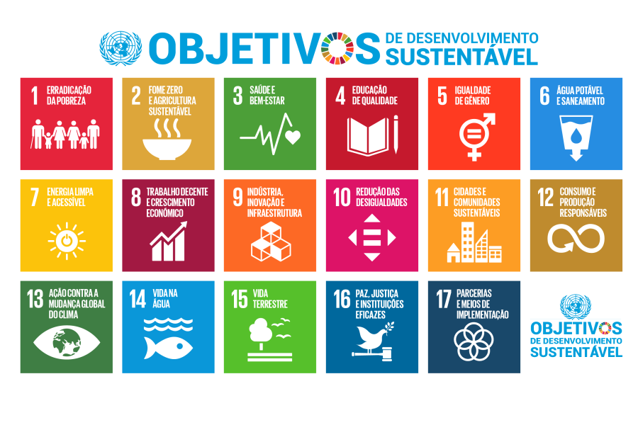

Transporte e alimentação: como essas ações impactam diretamente a emissão de carbono.
A ODS 15 (Objetivo de Desenvolvimento Sustentável 15) visa proteger, restaurar e promover o uso sustentável dos ecossistemas terrestres, combater a desertificação, deter e reverter a degradação da terra e a perda da biodiversidade. Seu foco está na conservação da natureza, na preservação das florestas, na gestão sustentável das terras e na proteção de espécies ameaçadas, buscando garantir um futuro sustentável para o planeta e para as gerações futuras.

Certos hábitos, embora aparentemente inofensivos, desempenham um papel significativo na emissão de CO₂. Em nossa pesquisa, investigamos dois desses hábitos e seu impacto ambiental, destacando como pequenas ações podem ter grandes consequências para o clima global:
Veículos movidos a combustíveis fósseis são responsáveis por grande parte das emissões de CO₂. Escolhas como caminhar, usar bicicleta ou transporte público ajudam a reduzir esses impactos.
A produção de carne vermelha gera altos níveis de metano, um potente gás de efeito estufa. Reduzir o consumo de carne e adotar dietas mais sustentáveis é uma forma prática de ajudar o planeta.
O cálculo do consumo de CO₂ proveniente de combustíveis leva em consideração a quantidade de combustível utilizado e a emissão média de CO₂ por litro ou quilograma de cada tipo de combustível. Por exemplo, combustíveis fósseis como gasolina e diesel liberam grandes quantidades de CO₂ quando queimados para abastecer veículos. No caso da carne, o cálculo envolve a quantidade de gases de efeito estufa emitidos durante todo o ciclo de produção, desde a criação dos animais até o processamento da carne. A produção de carne vermelha, especialmente, gera uma quantidade significativa de metano, um gás de efeito estufa muito mais potente que o CO₂. Ambos os cálculos são fundamentais para avaliar o impacto ambiental desses hábitos e buscar alternativas mais sustentáveis.
Para mais informações, acesse o site oficial da ONU sobre o ODS 15:
https://brasil.un.org/pt-br/sdgs/15
Substituir o carro por transporte público duas vezes por semana pode reduzir sua emissão anual de carbono em até 20%.